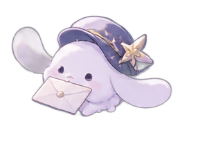
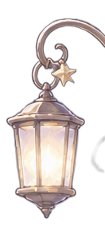

迷子の流れ星
きのう、流星駅の近くで道に迷っていた小さな星を見つけたの。帰り道がわからなくなっちゃったんだって。だから、いっしょに星図を広げてみたよ。
星だって、たまには迷子になるんだね。……わたしもよく迷うから、ちょっと親近感。
Lumina, with starlight ✧
星の郵便屋さん、ただいま配達中。
眠れない夜も、うれしい朝も。
あなたの気持ちが、ちゃんと届くように。
星のあいだを旅する、ひとりの少女のおはなし。


星の向こうから、ちいさなお知らせ。
※ このサイトに掲載された告知・日付・人物はすべて架空の作品設定です。
Somewhere, beyond
the midnight sky.
この宇宙には、
まだ誰にも見つけられていない
「きもちの星」があるんだって。
夜空のはずれに浮かぶ、ちいさな郵便局。そこで働くルミナのお仕事は、誰かの胸にしまわれた想いを、星の光に変えて届けること。
宛先のわからない「ありがとう」も、言えなかった「ごめんね」も。ひとつひとつ、なくさないように。
星の郵便局の、ちょっと不器用な配達員。
THE GIRL WHO DELIVERS STARLIGHT
「えへへ、今日の空はどんな色かな？」
ひとと星をつなぐ、夜空の配達員。少し方向音痴だけど、届けたい気持ちだけは誰にも負けない。
ルミナの、きらきらした一瞬を集めて。
A new illustrated collection. The character and props are transparent illustrations; backgrounds and interface are HTML/CSS.
言葉にしたら、
きっと星になる。
ルミナの星のポストに、あなたのひとことを。空へ手紙を飛ばす、ちいさな体験をどうぞ。
夜空の星をクリックして、ルミナの暮らす天球の小さな物語を見つけよう。
星明かりの入った封筒が、毎晩届く場所。ルミナはここから、誰かの大切な気持ちを届けに旅立ちます。
新しい場所を見つけると、星図に記録が残るよ。
今日の空から、あなたに届いたメッセージ。
ルミナが星の並びを見て選んだ、日替わりの小さな占い。結果は日付ごとに変わります。
ボタンを押すと、今日だけの小さなメッセージが届きます。
4つの質問に答えて、あなたの星属性を見つけよう。
正解も不正解もありません。今のあなたに近いものを選んでみてね。
YOUR STAR TYPE IS...
診断結果は娯楽用で、心理学的な診断ではありません。
流れ星をつかまえよう！
30秒間、落ちてくる星をできるだけたくさん集めてね。流星はクリック・タップでつかまえられます。キーボードなら、ゲーム画面にフォーカスしてスペースキーでもOK。
ハイスコアだけをこのブラウザに保存します。
ルミナの小さな日常を綴った、星色の日誌。
きのう、流星駅の近くで道に迷っていた小さな星を見つけたの。帰り道がわからなくなっちゃったんだって。だから、いっしょに星図を広げてみたよ。
星だって、たまには迷子になるんだね。……わたしもよく迷うから、ちょっと親近感。
夜空のポストカードを作って、画像として手元に残そう。
✧ 文章とテーマを変えるとリアルタイムで更新されます。
サイトで遊んだ思い出が、星の切手になるよ。
星の郵便局によく届く質問。
星綴ルミナはこのサイトのために作られた架空のキャラクターです。日記やニュースも創作世界の設定ですよ。
いいえ。星のポストの文章は外部サーバーに送信されず、画面上で返事を表示するだけです。実際の送信機能はありません。
診断は選択肢による簡単なスコア集計、占いは日付による固定パターンです。いずれも娯楽用に制作したオリジナルコンテンツです。
キャラクターと小道具に透過画像を使い、背景やUIはHTML・CSS・JavaScriptで構成しています。アプリの動作に外部アカウントは必要ありません。